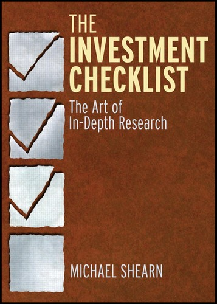

迈克尔·希恩（Michael Shearn）是一位深耕基本面分析的价值投资者，长期管理自己的投资基金Compound Money。他的投资方法深受沃伦·巴菲特（Warren Buffett）与查理·芒格（Charlie Munger）影响，强调对企业的深度研究而非对市场趋势的追逐。《投资检查清单》（The Investment Checklist）于2012年由威利出版社（Wiley）出版，是一本以系统性问题框架为核心的投资研究指南。全书的基本理念是：优秀的投资决策并非源于天才般的灵光一现，而是源于一套经过精心设计的问题清单——通过反复追问正确的问题，投资者可以大幅降低因遗漏关键信息而犯错的概率。
全书围绕四大核心维度展开：理解企业、评估管理层、分析财务状况、判断估值。在理解企业方面，希恩要求投资者回答诸如"这家企业的竞争优势是什么""客户为什么选择它而非竞争对手""行业的长期结构性趋势对它是有利还是不利"等问题。在评估管理层方面，他提出的问题包括"管理层是否诚实地讨论失败""他们的薪酬结构是否与长期股东利益一致""他们的资本配置记录如何"。在财务分析方面，清单涵盖了自由现金流的质量、资产负债表的稳健程度、收入确认方式中潜藏的风险等关键议题。在估值方面，他强调的不是寻找精确的内在价值数字，而是判断当前价格是否为投资者提供了足够的安全边际。希恩将这些问题组织成一个结构化的检查流程，使得即便是经验尚浅的投资者，也能避免在研究中遗漏那些最关键却最容易被忽视的环节。
这本书的方法论与航空和医疗领域的检查清单理念一脉相承。阿图尔·加万德（Atul Gawande）在《清单革命》中论证了检查清单如何在手术室中挽救生命，希恩则将同样的逻辑应用于投资决策：当面对信息过载和认知偏差时，一份精心设计的清单可以充当认知的安全网，防止投资者在兴奋或恐惧中跳过关键步骤。查理·芒格长期倡导在决策中使用检查清单，他在《穷查理宝典》中明确指出："如果飞行员每次起飞前都需要检查清单，那么试图在复杂系统中做出正确判断的投资者，没有理由认为自己可以仅凭记忆完成同样的工作。"希恩的这本书，正是将芒格的这一原则转化为可操作的工具。
《投资检查清单》的价值不在于它提供了某种独特的投资理论，而在于它提供了一种纪律。对于价值投资的实践者而言，最大的敌人往往不是信息不足，而是在信息充分的情况下仍然做出草率的决定——因为某个引人入胜的叙事遮蔽了关键的风险因素，因为对管理层的第一印象取代了对其实际记录的考察，因为对过去业绩的简单外推取代了对未来竞争格局的严肃分析。希恩的检查清单迫使投资者在每一个关键节点上停下来，诚实地面对证据，而不是被自己的预设结论所裹挟。这本书适合每一位希望让自己的研究过程更加严谨、更加系统的投资者反复参考。